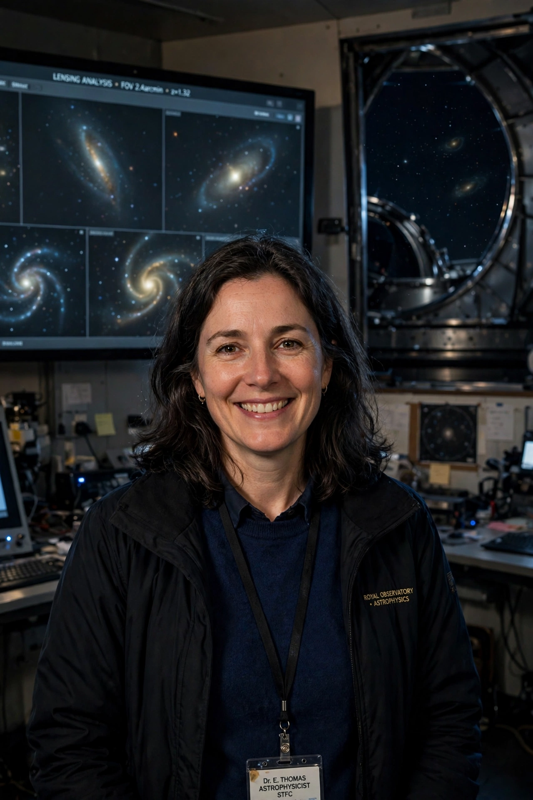

Catherine Heymans
| Catherine Heymans | |
|---|---|
 | |
| Born | Hitchin, Hertfordshire, England |
| Nationality | British |
| Alma mater | University of Edinburgh; University of Oxford |
| Known for | Weak gravitational lensing; dark matter and dark energy cosmology |
| Awards | Fellow of the Royal Society of Edinburgh; Max Planck–Humboldt Research Award (2018) |
| Fields | Astrophysics, cosmology |
| Institutions | University of Edinburgh |
Catherine Heymans is a British astrophysicist and Professor of Astrophysics at the University of Edinburgh. She is one of the world's leading experts on weak gravitational lensing, a technique that uses the subtle distortions of distant galaxy images to map the distribution of dark matter and to constrain the properties of dark energy. In 2021 she was appointed Scotland's first female Astronomer Royal for Scotland.
Early life and education
Heymans grew up in Hitchin, Hertfordshire, and attended Hitchin Girls' School. She studied physics at the University of Edinburgh, and completed her doctorate at the University of Oxford in 2003, working on the cosmic shear signal from large galaxy surveys. She then held postdoctoral positions in Heidelberg, Paris and at the University of British Columbia in Canada, before returning to Edinburgh.
Research
Heymans has led major weak-lensing analyses from surveys including the Canada–France–Hawaii Telescope Lensing Survey (CFHTLenS) and the Kilo-Degree Survey (KiDS). Her measurements of cosmic shear have repeatedly found a Universe that appears slightly "smoother" than predicted by the standard Lambda-CDM model calibrated on the cosmic microwave background — a discrepancy known as the S8 tension, which may hint at new physics or unrecognised systematics. She is a co-investigator on the European Space Agency's Euclid space telescope, launched in 2023, which will map the geometry of the dark Universe over a third of the sky.
Science communication
Heymans is a well-known communicator of astronomy. She co-created the Massive Open Online Course "AstroTech: The Science and Technology behind Astronomical Discovery" and has appeared as an expert in television documentaries. With science communicator Ian Liddle she developed public-engagement projects combining cosmology with art.
Honours
She was elected a Fellow of the Royal Society of Edinburgh in 2014 and received the Max Planck–Humboldt Research Award in 2018. As Astronomer Royal for Scotland — an honorary post revived under her appointment — she promotes astronomy education across Scotland, particularly among children in rural communities.